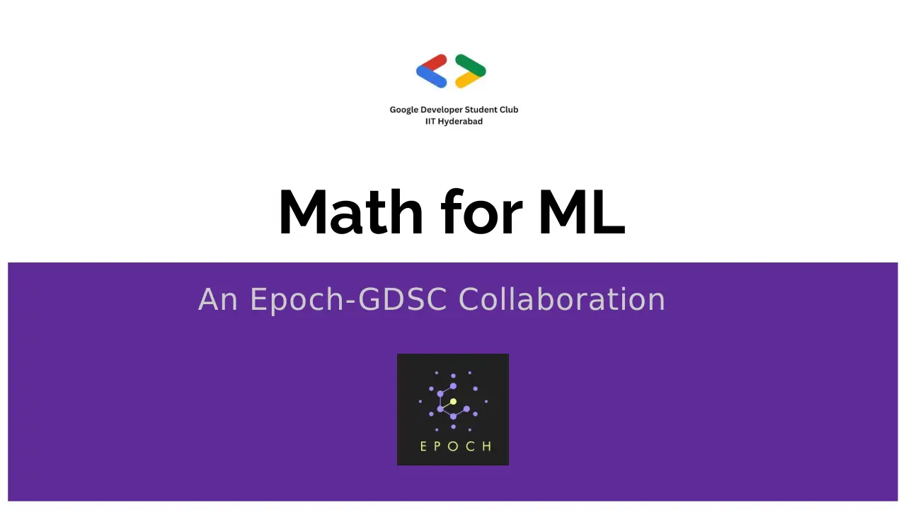

A hands-on workshop on the most important mathematical concepts: probability, statistics, linear algebra and calculus, with hands-on and theory exercises.

Two-day workshop, with GDSC · Epoch, IIT Hyderabad · 1st April, 2023 and 4th April, 2023
A hands-on workshop on the most important mathematical concepts: probability, statistics, linear algebra and calculus, with hands-on and theory exercises.